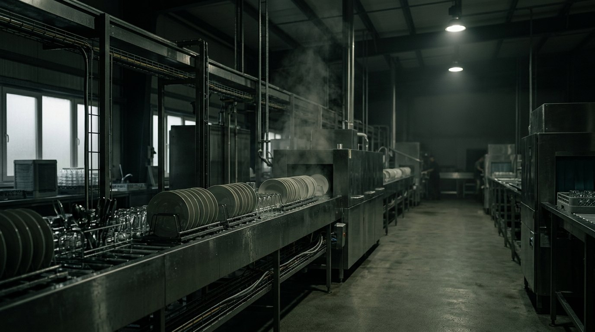

유아·교육 식기케어
어린이집·유치원의 식판·식기를 위생적으로 관리합니다. 선생님은 설거지에서, 학부모는 위생 걱정에서 자유로워집니다.
- 식판·컵·수저 일괄 대여·관리
- 120℃ 고온 살균 + ATP 위생검사
- 전국 280개소 운영 중
수거부터 자동 세척, IoT 위생검증, 익일 배송까지 — RE:able은 한 번 쓰고 버리던 식기를 다시 순환시킵니다. 7년 연속 흑자로 검증된 운영이 그 약속을 지킵니다.
설거지·위생관리·식기 구매를 더 이상 현장에서 고민하지 마세요. RE:able이 식기 대여 → 사용 후 수거 → 자동 세척·살균 → 익일 배송까지 하나의 순환으로 책임집니다.
어린이집·유치원의 식판·식기를 위생적으로 관리합니다. 선생님은 설거지에서, 학부모는 위생 걱정에서 자유로워집니다.
기업 구내식당, 병원, 장례식장까지. 대량 다회용기를 일회용 없이 운영하면서 비용과 환경을 동시에 잡습니다.
학교급식·공공조달·지역 축제. 일회용 금지 정책에 맞춰 행사장과 공공기관에 다회용기 순환 시스템을 제공합니다.
버려지지 않도록, 안전하게. RE:able의 순환은 네 단계로 끊김 없이 이어집니다.
사용을 마친 식기를 거점별 정기 루트로 회수합니다.
8단계 공정 — 애벌부터 본세척, 120℃ 고온 살균까지.
ATP 측정으로 세척 품질을 수치로 검증, 100% 합격 관리.
진공 포장 후 다음 날 현장으로 깨끗한 식기를 다시 전달.

특허 제10-2966388호 · AI 식기세척장치AI 비전이 식기의 형상과 오염도를 스스로 인식해 세척 조건을 조절합니다. 균일한 품질, 검증 가능한 위생 — 자동화가 만드는 신뢰입니다.
스테레오 카메라가 식기 종류·오염도를 판별해 세척 강도를 자동 조절.
세척 후 잔류 오염을 수치로 측정해 100% 합격 품질을 보장.
2세대 설비 기준 세척수 30%, 에너지 15% 절감으로 더 가볍게.
전 고객사 730곳 기준, 2027년 목표 환경 효과입니다. 숫자는 일회용을 다회용으로 바꿨을 때 줄어드는 실제 부담입니다.
어린이집부터 기업 구내식당까지. 까다로운 위생 기준을 매일 통과해야 하는 현장이 우리를 신뢰합니다.
“설거지에 쓰던 시간이 사라졌어요. 선생님들이 아이들에게 더 집중할 수 있게 됐습니다.”
“위생 데이터를 수치로 받아보니 학부모 신뢰가 완전히 달라졌어요. 매번 합격이라는 게 안심됩니다.”
“일회용을 다회용으로 바꾸면서 폐기물 비용이 줄고, ESG 보고서에도 쓸 수 있는 숫자가 생겼습니다.”
기관 규모와 운영 환경에 맞춰 맞춤 견적을 안내해 드립니다. 부담 없이 문의를 남겨주세요 — 영업일 기준 1일 이내에 회신드립니다.